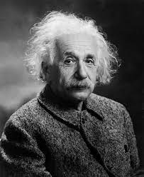
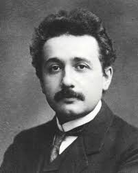

Albert Einstein
About Me
I was born in Ulm, Germany in 1879, and spent most of my childhood in Munich. As a young man, I was deeply interested in mathematics and physics, and I eventually became a professor of physics in Zurich and then Berlin. My work on the theory of relativity, which I developed in 1905, changed the way we understand the relationship between space and time. Later, I introduced the theory of general relativity, which proposed that gravity is not a force, but rather a curvature of spacetime caused by the presence of massive objects. In addition to my scientific work, I was also deeply involved in political and social causes. I was a pacifist and a vocal opponent of war, and I advocated for nuclear disarmament later in my life. I also had a great love for music and played the violin regularly. Overall, I am proud of the contributions I made to physics and the impact that my work has had on our understanding of the universe. I hope that my ideas will continue to inspire future generations of scientists and thinkers.
Papers
Experience
Clerk1902-1909
Swiss Patent Office, BernLecturer1908
University of BernAssociate professor of physics1909-1910
University of ZurichProfessor of physics1911
Unversity of PragueProfessor of physics1912-1913
Swiss Federal Polytechnic InstituteDirector1914-1933
Kaiser Wilhelm Physical Institution, BerlinProfessor of Theoretical Physics1933-1955
Institute for Advanced Study, PrincetonHobbies
Collections
 Blogs
Andrew Robinson— “Einstein was an Anglophile,” declared three leading US scholars of Albert Einstein—Alice Calaprice, Daniel Kennefick and Robert Schulmann—without hesitation or qualification in their study, An Einstein Encyclopedia, published by Princeton University Press in 2015, the centenary of the publication of Einstein’s general theory of relativity. Yet Einstein chose to
Scientists have finally measured gravitational waves from the collision of black holes. Marcia Bartusiak explains why this matters and talks about some of the universe’s most mysterious objects.